06 - Дерева рішень 🌲🌴🌳
Machine Learning
Ігор Мірошниченко
КНЕУ::ІІТЕ
2023-05-01
Дерева рішень
Основи
Дерева рішень
- розділяють простір предиктора (наш \(\mathbf{X}\)) на області
- потім прогнозують найпоширеніше значення в області
Дерева рішень
- Працюють як для як класифікації, так і регресії
- за своєю суттю є нелінійними
- є відносно простими і інтерпретованими
- легко масштабувати на дуже конкурентоспроможні ансамблеві методи (багато дерев)
Приклад: Просте дерево рішень, що класифікує дефолт кредитної картки
Давайте подивимося, як працює дерево
Давайте подивимося, як працює дерево (за замовчуванням: Так vs. Ні).
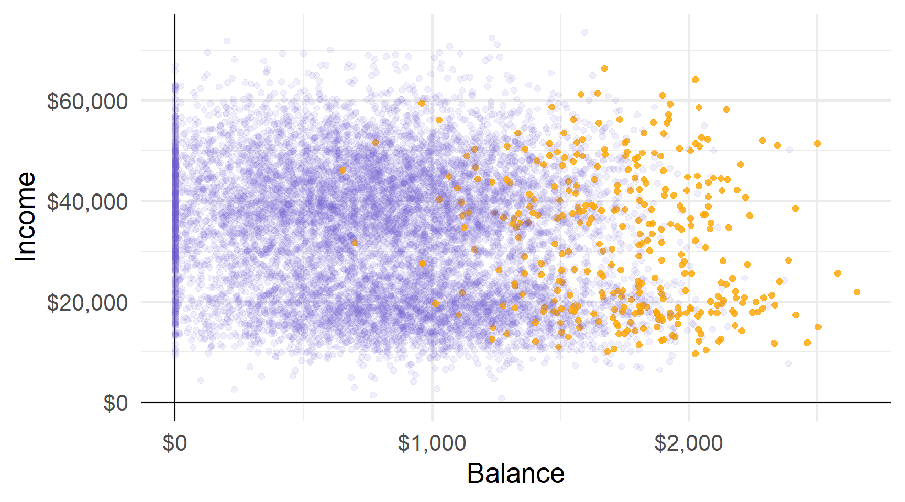Перший розділ дылить баланс у $1800 доларів США.
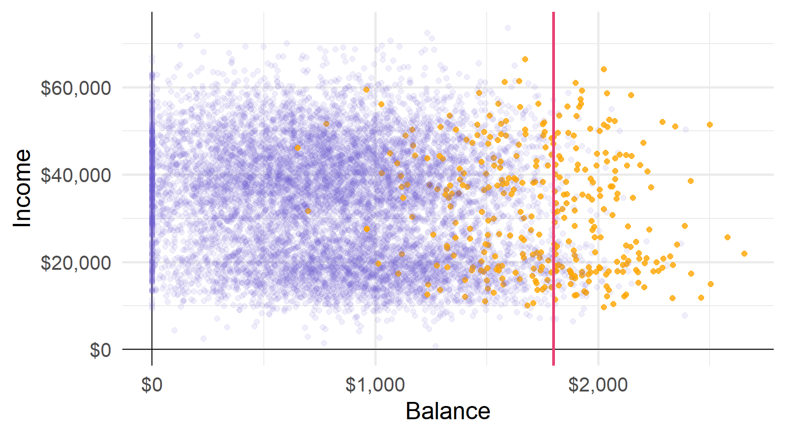Другий розділ ділить баланс на $1972 (за умови балансу > $1800).
Третій розділ ділить дохід у $27K для баллансу від $1800 до $1972 доларів.
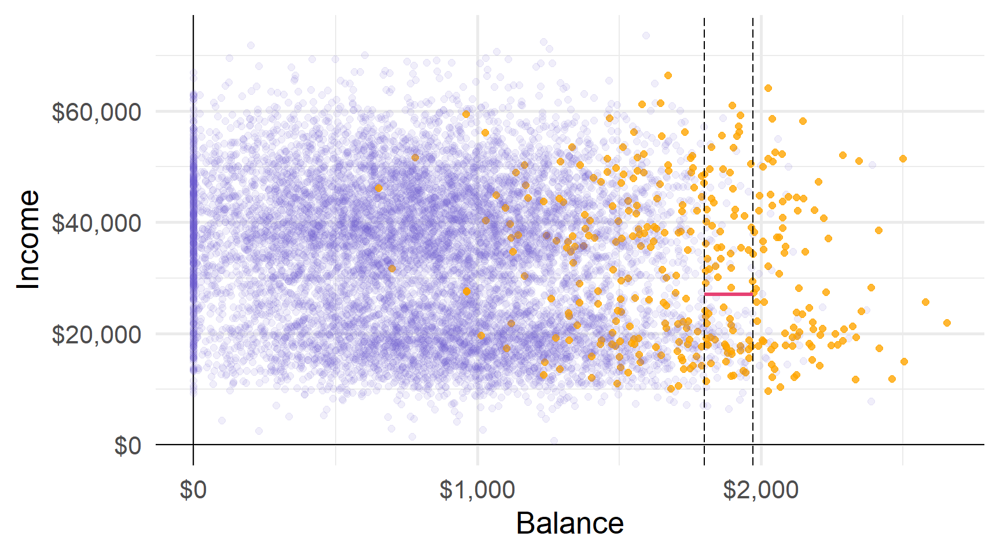Ці три розділи дають нам чотири області…
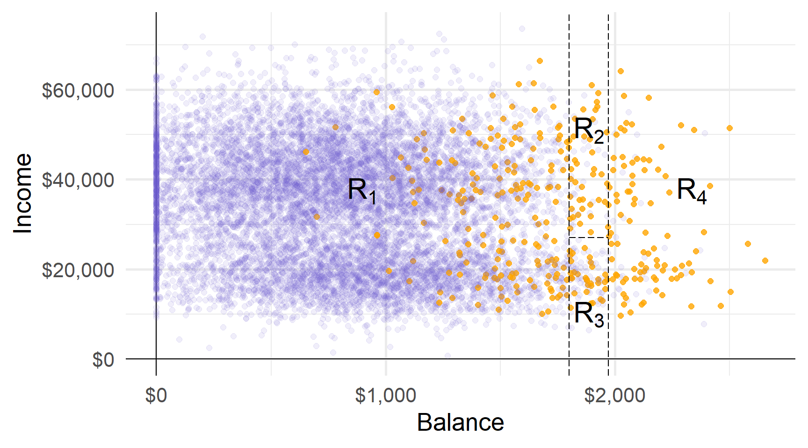Прогнози: наприклад, використовуючи найпоширеніший клас області.
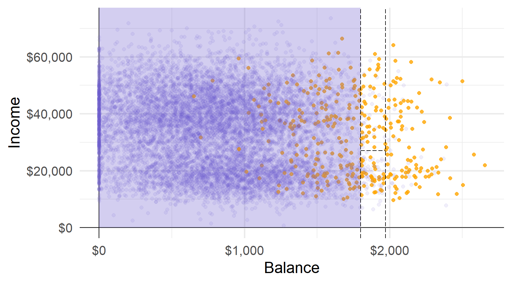Прогнози: наприклад, використовуючи найпоширеніший клас області.
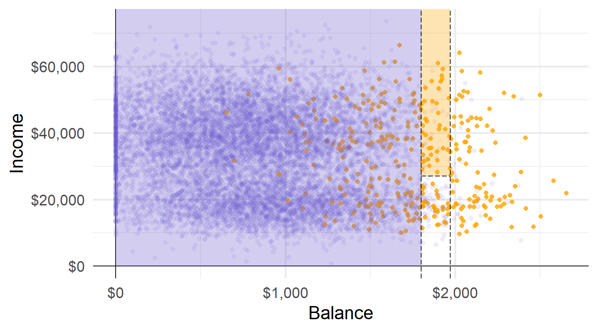Прогнози: наприклад, використовуючи найпоширеніший клас області.
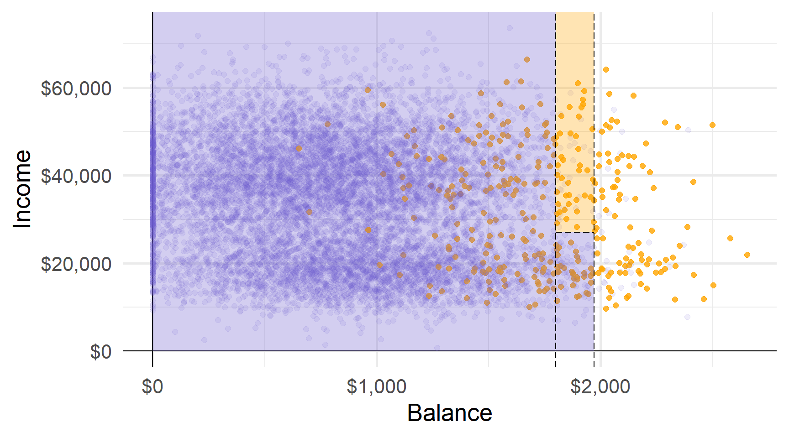Прогнози: наприклад, використовуючи найпоширеніший клас області.
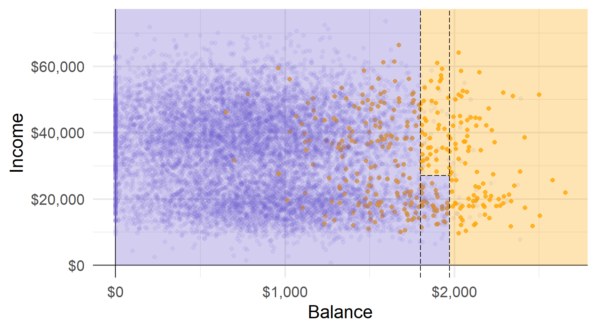Області відповідають кінцевим вузлам (або листям) дерева.
Розділові лінії графіка відповідають внутрішнім вузлам дерева.
Сегменти, що з’єднують вузли всередині дерева, є його гілками.
Тепер ви знаєте анатомію дерева рішень.
Але звідки беруться дерева — як ми навчаємо дерево?
Регресійні дерева
Регресійні дерева
Ми почнемо з регресійних дерев, тобто дерев, які використовуються в задачах регресії.
Як ми бачили, завдання вирощування дерева складається з двох основних кроків:
- Розділити простір предикторів на області \(J\) (використовуючи предиктори \(\mathbf{x}_1,\ldots,\mathbf{x}_p\))
- Зробіть прогноз, використовуючи середній результат для області
Для області \(R_j\) передбачте \(\hat{y}_{R_j}\) де
\[ \begin{align} \hat{y}_{R_j} = \frac{1}{n_j} \sum_{i\in R_j} y \end{align} \]
Вирощування дерев
Ми вибираємо області для мінімізації RSS серед усіх \(J\) областей, тобто,
\[ \begin{align} \sum_{j=1}^{J} \left( y_i - \hat{y}_{R_j} \right)^2 \end{align} \]
Проблема: Вивчення кожного можливого розділу обчислювально неможливо.
Рішення: алгоритм зверху вниз, жадібний під назвою рекурсивне двійкове розбиття
- recursive починається з “найкращого” розділу, потім знаходить наступний “найкращий” розділ, …
- binary кожне розбиття створює дві гілки — “так” і “ні”
- greedy краще розбиття, виходячи з наявних на кожному етапі даних, не зважаючи на можливі наслідки
Вирощування дерев: вибір поділу
Нагадування Дерева регресії вибирають поділ, який мінімізує RSS.
Щоб знайти цей поділ, нам потрібно
- предиктор, \(\color{#6A5ACD}{\mathbf{x}_j}\)
- cutoff \(\color{#e64173}{s}\), який розділяє \(\color{#6A5ACD}{\mathbf{x}_j}\) на дві частини: (1) \(\color{#6A5ACD }{\mathbf{x}_j} < \color{#e64173}{s}\) і (2) $ $
Шукаючи в кожному з наших предиктор \(\color{#6A5ACD}{j}\) і всіх їхніх cutoff \(\color{#e64173}{s}\),
ми вибираємо комбінацію, яка мінімізує RSS.
Приклад: розбиття
Приклад Розглянемо набір даних
| i | pred. | y | x1 | x2 |
|---|---|---|---|---|
| 1 | 0 | 0 | 1 | 4 |
| 2 | 0 | 8 | 3 | 2 |
| 3 | 0 | 6 | 5 | 6 |
Лише з тьома спотсереженнями кожна змінна має лише два фактичних розбиття
Приклад: розбиття
Одне можливие розбиття: x1 на 2, що дає (1) x1 < 2 vs. (2) xx1 ≥ 2
| i | pred. | y | x1 | x2 |
|---|---|---|---|---|
| 1 | 0 | 0 | 1 | 4 |
| 2 | 7 | 8 | 3 | 2 |
| 3 | 7 | 6 | 5 | 6 |
Приклад: розбиття
Одне можливие розбиття: x1 на 2, що дає (1) x1 < 2 vs. (2) x1 ≥ 2
| i | pred. | y | x1 | x2 |
|---|---|---|---|---|
| 1 | 0 | 0 | 1 | 4 |
| 2 | 7 | 8 | 3 | 2 |
| 3 | 7 | 6 | 5 | 6 |
Таке розбиття дає RSS 02 + 12 + (-1)2 = 2.
Note1 Розщеплення x1 на 2 дає ті самі результати, що й 1,5, 2,5 — будь-що в (1, 3).
Note2 Дерева часто ростуть, доки вони не досягнуть певної кількості спостережень у листі.
Приклад: розбиття
Альтернативне поділ: x1 на 4, що дає (1) x1 < 4 vs. (2) x1 ≥ 4
| i | pred. | y | x1 | x2 |
|---|---|---|---|---|
| 1 | 4 | 0 | 1 | 4 |
| 2 | 4 | 8 | 3 | 2 |
| 3 | 6 | 6 | 5 | 6 |
Таке розбиття дає RSS (-4)2 + 42 + 02 = 32.
Раныше: Розбиття x1 на 2 дало RSS = 2. (Набагато краще)
Приклад: розбиття
Інший поділ: x2 на 3, що дає (1) x1 < 3 vs. (2) x1 ≥ 3
| i | pred. | y | x1 | x2 |
|---|---|---|---|---|
| 1 | 3 | 0 | 1 | 4 |
| 2 | 8 | 8 | 3 | 2 |
| 3 | 3 | 6 | 5 | 6 |
Таке розбиття дає RSS (-3)2 + 02 + 32 = 18.
Приклад: розбиття
Остаточний поділ: x2 на 5, що дає (1) x1 < 5 vs. (2) x1 ≥ 5
| i | pred. | y | x1 | x2 |
|---|---|---|---|---|
| 1 | 4 | 0 | 1 | 4 |
| 2 | 4 | 8 | 3 | 2 |
| 3 | 6 | 6 | 5 | 6 |
Таке розбиття дає RSS (-4)2 + 42 + 02 = 32.
Приклад: розбиття
Серед наших чотирьох можливих поділів (по дві змінні з двома поділами)
- x1 з обмеженням 2: RSS = 2
- x1 з обмеженням 4: RSS = 32
- x2 з обмеженням 3: RSS = 18
- x2 з обмеженням 5: RSS = 32
Розбиття x1 на 2 генерує найнижчий RSS.
Примітка: Категориальні предиктори працюють точно так само.
Ми хочемо спробувати усі можливі комбінації категорій.
Ex: Для чотирирівневого категоріального предикатора (рівні: A, B, C, D)
- Спліт 1: A|B|C vs. D
- Спліт 2: A|B|D vs. C
- Спліт 3: A|C|D vs. B
- Спліт 4: B|C|D vs. A
- Спліт 5: A|B vs. C|D
- Спліт 6: A|C vs. B|D
- Спліт 7: A|D vs. B|C
нам потрібно буде спробувати 7 можливих розділень.
Більше поділів
Коли ми робимо наш спліт, ми продовжуємо розділяти,
умовно на області з наших попередніх поділів.
Отже, якщо наше перше розбиття створює R1 і R2, то наше наступне розбиття
шукає в просторі предикторів лише в R1 або R2.
Дерево продовжує рости, доки воно не досягне певного порогу,
наприклад, щонайбільше 5 спостережень на кожному листі.
Занадто багато поділів
Можна мати занадто багато поділів
Q Чому?
A “Більше розділень” означає
- більше гнучкості (подумайте про компроміс bias-variance/overfitting)
- менша інтерпретативність (одна з переваг дерев)
Q Отже, що ми можемо зробити?
A Обрізайте свої дерева!
Обрізання
Обрізання дозволяє нам “зтиснути” наші дерева до їх «найкращого вигляду».
Ідея: Деякі області можуть збільшити варіацію більше, ніж зменшити зміщення.
Видаляючи ці області, ми виграємо в тестовій MSE.
Кандидати на скорочення: області, які не дуже сильно зменшують RSS.
Оновлена стратегія: Вирощуйте великі дерева \(T_0\), а потім обрізайте \(T_0\) до оптимального піддерева.
Оновлена проблема: Розгляд усіх можливих піддерев може коштувати дорого.
Обрізання
Cost-complexity pruning1 пропонує рішення.
Так само, як ми робили з ласо, cost-complexity pruning змушує дерево платити ціну (штраф), за складнысть.
Складність тут визначається як кількість областей \(|T|\).
Обрізання
Зокрема, cost-complexity pruning додає штраф \(\alpha |T|\) до RSS, тобто,
\[ \begin{align} \sum_{m=1}^{|T|} \sum_{i:x\in R_m} \left( y_i - \hat{y}_{R_m} \right)^2 + \alpha |T| \end{align} \]
Для будь-якого значення \(\alpha (\ge 0)\) ми отримуємо піддерево \(T\subset T_0\).
\(\alpha = 0\) генерує \(T_0\), але зі збільшенням \(\alpha\) ми починаємо зрізати дерево.
Ми вибираємо \(\alpha\) через перехресну перевірку.
Дерево класифікації
Дерево класифікації
Класифікація за допомогою дерев дуже схожа на регресію.
Дерева регресії
- Прогноз: Середнє значення області
- Поділ: Зменшення RSS
- Обрізання: Штрафний RSS
Дерева класифікації
- Прогноз: Мода області
- Поділ: Мін. Джині або ентропія1
- Обрізання: Штраф частоти помилок2
Додатковий нюанс для дерева класифікації: ми зазвичай дбаємо про пропорції класів у листках, а не лише про остаточний прогноз.
Індекс Джині
Нехай \(\hat{p}_{mk}\) позначає частку спостережень у класі \(k\) і область \(m\).
Індекс Джіні говорить нам про «чистоту» області
\[ \begin{align} G = \sum_{k=1}^{K} \hat{p}_{mk} \left( 1 - \hat{p}_{mk} \right) \end{align} \] якщо область дуже однорідна, то індекс Джині буде малим.
Однорідні області легше передбачити.
Зменшення індексу Джині дає змогу отримати більш однорідні регіони
∴ Ми хочемо мінімізувати індекс Джіні.
Джині як функція ‘чистоти’
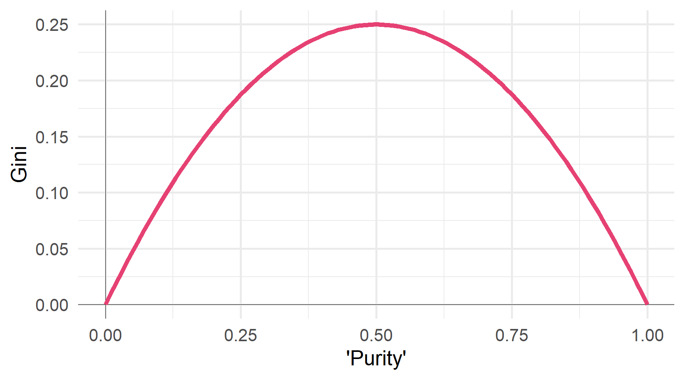Ентропія
Нехай \(\hat{p}_{mk}\) позначає частку спостережень у класі \(k\) і регіоні \(m\).
Ентропія також вимірює “чистоту” вузла/листка
\[ \begin{align} D = - \sum_{k=1}^{K} \hat{p}_{mk} \log \left( \hat{p}_{mk} \right) \end{align} \]
Ентропія також мінімізується, коли значення \(\hat{p}_{mk}\) близькі до 0 і 1.
Ентропія як функція ‘чистоти’
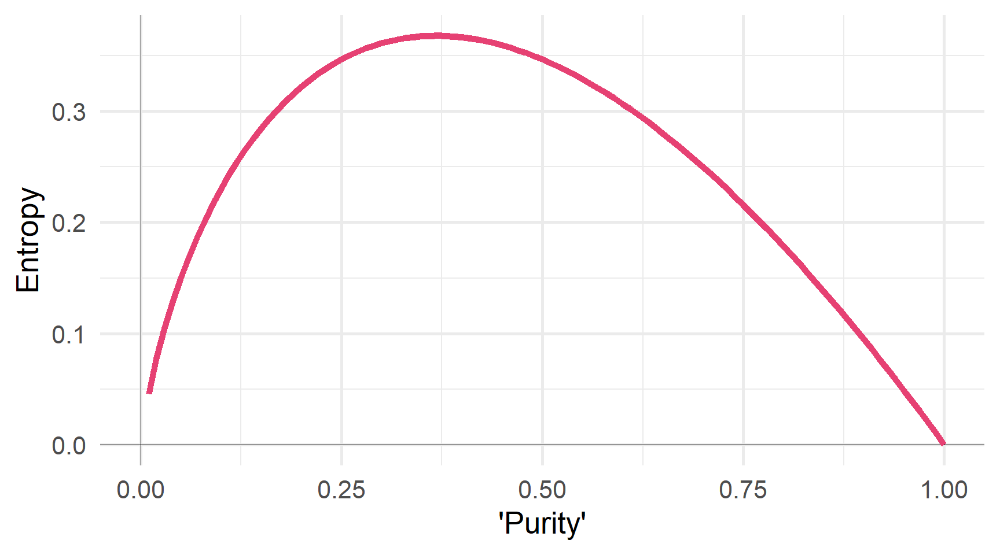Раціональність
Q Чому ми використовуємо індекс Джіні або ентропію (vs. частота помилок)?
A Частота помилок недостатньо чутлива, щоб виростити хороші дерева.
Індекс Джіні та ентропія говорять нам про композицію листа.
Приклад Розглянемо два різних листка в трирівневій класифікації.
Листок 1
- A: 51, B: 49, C: 00
- Частота помилок: 49%
- Індекс Джіні: 0,4998
- Ентропія: 0,6929
Листок 2
- A: 51, B: 25, C: 24
- Частота помилок: 49%
- Індекс Джіні: 0,6198
- Ентропія: 1,0325
Індекс Джіні та ентропія говорять нам про розподіл.
Побудова дерев рішень в R
Побудова дерев рішень в R
Щоб навчити дерева рішень у R, ми можемо використовувати parsnip, який спирається на rpart.
У parsnip ми використовуємо функцію decision_tree().
Модель decision_tree() (з механізмом rpart) потребує чотирьох аргументів:
mode:"regression"або"classification"cost_complexity: штраф за складністьtree_depth: макс. глибина дерева (макс. кількість розділень у «гілці»)min_n: мін. к-ть спостережень для вузла, який потрібно розділити
# CV split
set.seed(12345)
default_cv = default_df %>% vfold_cv(v = 5)
# Дерево рішень
default_tree = decision_tree(
mode = "classification",
cost_complexity = tune(),
tree_depth = tune(),
min_n = 10 # Довільний вибір «10»
) %>% set_engine("rpart")
# Визначити рецепт
default_recipe = recipe(default ~ ., data = default_df)
# Визначте робочий процес
default_flow = workflow() %>%
add_model(default_tree) %>% add_recipe(default_recipe)
# Налаштування!
default_cv_fit = default_flow %>% tune_grid(
default_cv,
grid = expand_grid(
cost_complexity = seq(0, 0.15, by = 0.01),
tree_depth = c(1, 2, 5, 10),
),
metrics = metric_set(accuracy, roc_auc)
)Точність, складність і глибина
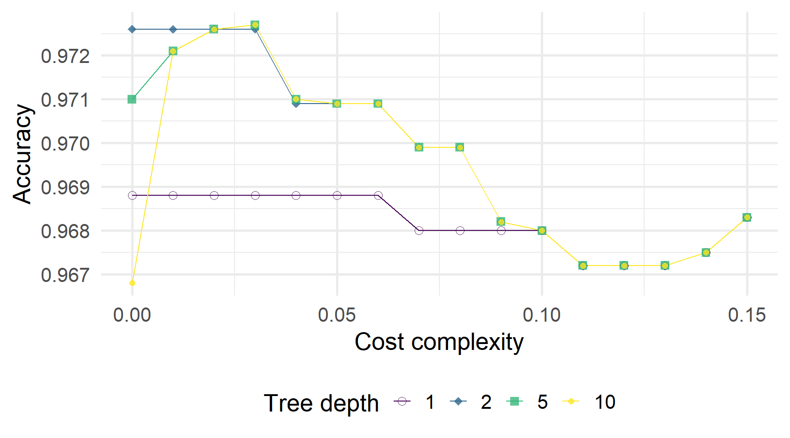ROC AUC, складність і глибина
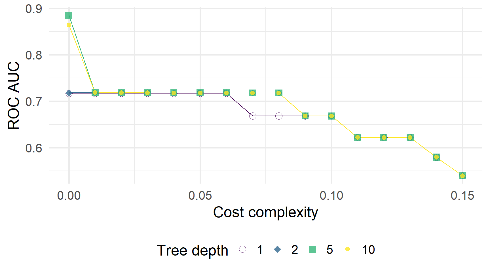Щоб побудувати дерево, вибране CV…
1. Fit обрана/найкраща модель.
2. Витягіть підігнану модель, наприклад,, за допомогою extract_fit_parsnip.
Старий/застарілий спосіб: pull_workflow_fit()
3. Графік дерева, наприклад,, за допомогою rpart.plot() з rpart.plot.
Попереднє дерево має вартість складності 0,03 (і максимальну глибину 5).
Ми можемо порівняти це «найкраще» дерево з менш обрізаним/оштрафованим деревом
cost_complexity = 0,005tree_depth = 5
Що, якщо ми залишимо складність вартості постійною, але збільшимо макс. глибина?
cost_complexity = 0,005tree_depth = 10(збільшено з5)
Що, якщо ми збільшимо константу складності?
cost_complexity = 0,1(збільшено з0,005)tree_depth = 10
Q Як дерева порівнюються з лінійними моделями?
A Це залежить від того, наскільки лінійна істині значення.
Лінійна межа: дерева намагаються відтворити лінію.
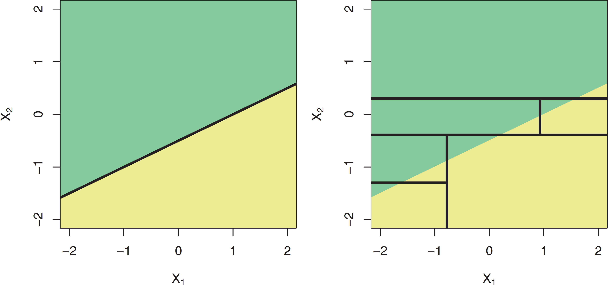Рис. 1: ?(caption)
Нелінійна межа: дерева легко повторюють нелінійну межу.

Рис. 2: ?(caption)
Переваги та недоліки
Переваги та недоліки
Як і в будь-якому іншому методі, дерева рішень мають компроміси.
Сильні сторони
+ Легко пояснюється/інтерпретується
+ Включає кілька графічних параметрів
+ Дзеркало прийняття рішень людиною?
+ Працють з категор та числ. змін1.
Слабкі сторони
- Інші методи можуть бути кращі
- Боротьба з лінійністю
- Може бути дуже “не робастими”
Не робасті: Невеликі зміни даних можуть спричинити значні зміни в нашому дереві.
Дякую за увагу!
ihor.miroshnychenko@kneu.ua